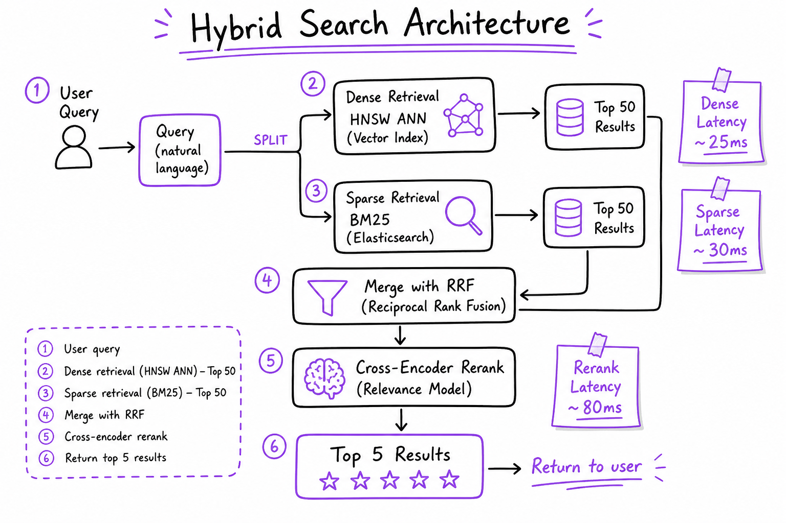
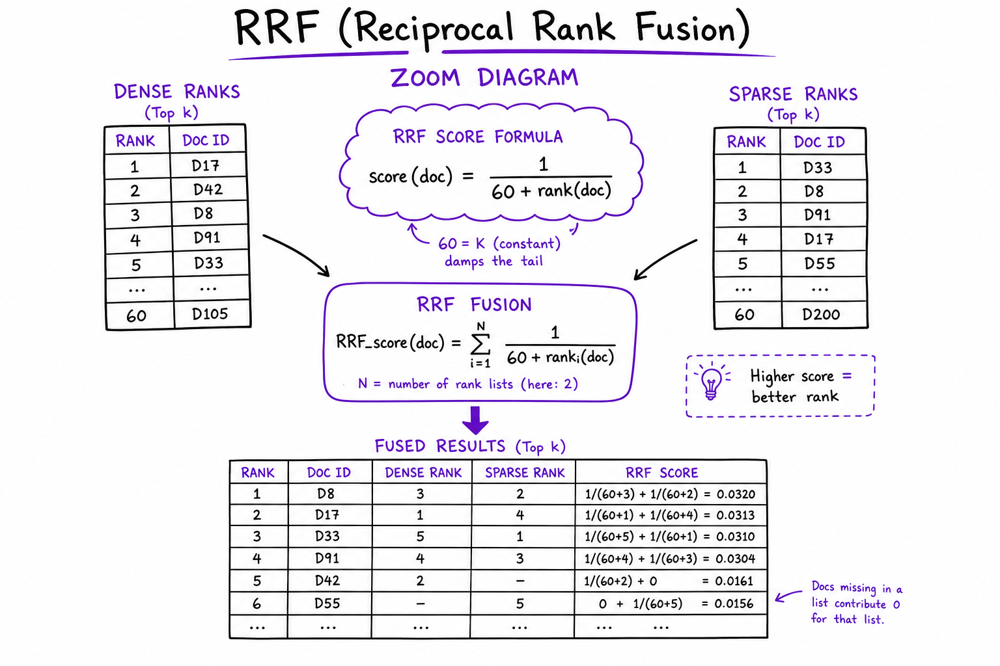
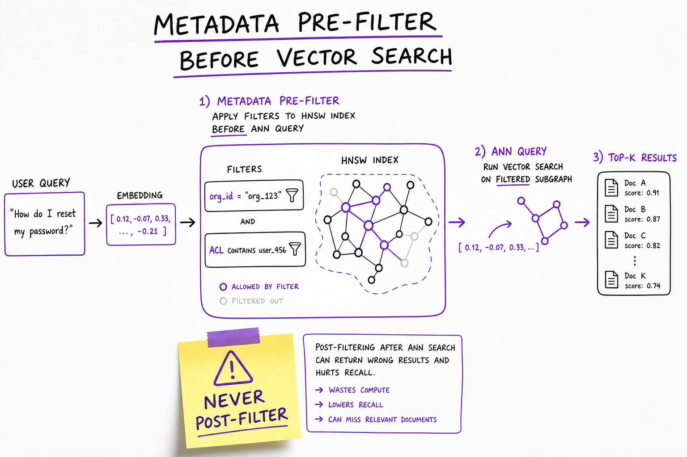

Hybrid Search // Systems
Combine dense vector search with sparse BM25: parallel retrieval, RRF fusion, metadata pre-filter, and cross-encoder rerank. Neither alone covers enterprise queries.

Hybrid retrieval architecture: query embed + BM25 tokenize in parallel, RRF merge top-50, cross-encoder rerank to top-5, metadata pre-filter before ANN.
01 — What & Why
Dense finds paraphrases; sparse finds exact tokens (SKUs, error codes). Enterprise RAG needs both.
NFR
- Recall@5 >95% on golden set
- Retrieve stage <50ms p99
- Pre-filter by org_id/ACL before ANN
01a — Core Concepts
| Term | Definition | Gotcha |
|---|---|---|
| Bi-encoder | Separate query/doc embeddings | Fast but shallow |
| BM25 | Lexical TF-IDF ranking | Misses paraphrases |
| RRF | Merge ranks: 1/(k+rank) | k=60 typical |
| Pre-filter | Metadata filter before ANN | Post-filter leaks tenants |
01b — API Surface
POST /v1/search/hybrid
{ query, org_id, filters, top_k: 50, fusion: "rrf" }
-> { results: [{ chunk_id, dense_rank, sparse_rank, rrf_score }] }
retrieval.hybridSearch(q, filters, top_k=50)
rerank.scorePairs(q, chunks) -> top 502 — When to Use / When NOT
| Mode | Use When | Skip When |
|---|---|---|
| Hybrid | Enterprise mixed queries | Pure conversational FAQ |
| Dense-only | Paraphrase-heavy, no SKUs | Legal codes, product IDs |
| Sparse-only | Exact identifier lookup | Natural language questions |
03 — Architecture
Query -> [Embed -> HNSW top-50] parallel [BM25 -> ES top-50]
-> RRF merge -> Cross-encoder rerank top-5 -> Context04 — Deep Dive: RRF

RRF score calculation merging dense and sparse rank lists
score_rrf(d) = sum 1/(k + rank_L(d)) # k=60 # doc rank 1 dense + rank 8 sparse -> high fused score
05 — Deep Dive: Weighted Fusion
score = α·dense + (1-α)·sparse. Tune α on dev set. RRF is more robust when score scales differ.
06 — Deep Dive: Parallel Retrieve
Fire dense + sparse concurrently (asyncio/gRPC). Merge latency = max(dense, sparse) not sum. Target <40ms combined.
07 — Deep Dive: Pre-filter

Metadata pre-filter by org_id and ACL before HNSW ANN search
Pinecone namespace, pgvector WHERE, Weaviate tenant filter. Never post-filter after ANN.
08 — Deep Dive: Query Routing
Classifier routes SKU-like queries to sparse-heavy (α=0.3). Conversational to dense-heavy. Saves sparse load on chit-chat.
09 — Production & Ops
- Trace dense_ms, sparse_ms, fusion_ms separately
- A/B dense-only vs hybrid on Recall@5
- Cache frequent query embeddings
10 — Where It Shows Up
11 — Common Pitfalls
- Dense-only missing 20–35% enterprise queries
- Post-filter ACL after ANN
- Not normalizing query length for BM25
- Skipping rerank after hybrid merge